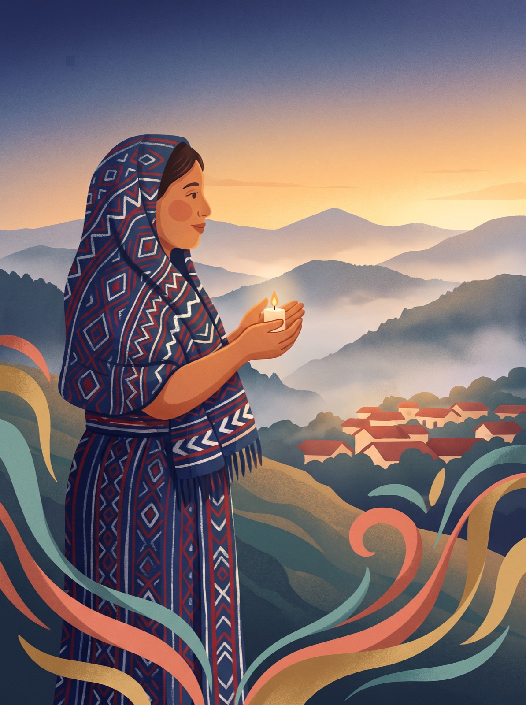
Estudio de caso · Iniciativa RECARGA · Rabinal, Baja Verapaz
CECBI: educar en la memoria y la identidad achi
Del genocidio maya achi a un centro educativo propio: la historia de cómo la Fundación Nueva Esperanza Río Negro convirtió la búsqueda de justicia de un sobreviviente en una escuela bilingüe e intercultural para Rabinal.
Adaptado del estudio de caso CECBI, desarrollado por Population Council Guatemala dentro de la iniciativa RECARGA (Recuperando la Educación en Centroamérica: Activando Redes y Grupos Asociados), en colaboración con la Fundación Nueva Esperanza Río Negro. Ilustraciones generadas con inteligencia artificial (Artlist), inspiradas en el estilo visual original de RECARGA.
Desplázate para leer ↓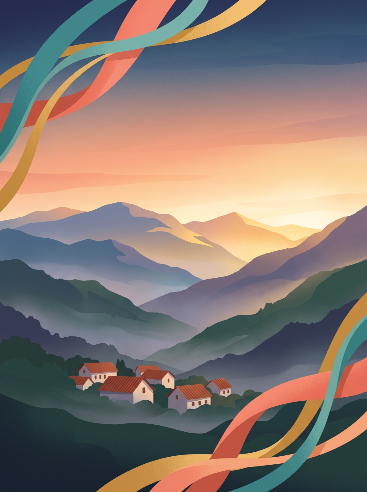
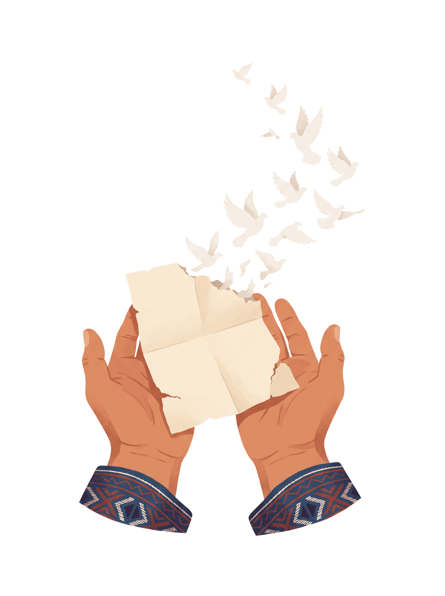
Capítulo 01 · 07Guerra y paz
A la espera de la paz
Tras 36 años de guerra cruenta1, la paz llegó a un país roto, oprimido. En la ciudad de Guatemala se firmaron, el 29 de diciembre de 1996, los Acuerdos de Paz que pusieron fin al conflicto bélico entre el Estado y la guerrilla.
La paz llegó a Guatemala, o esa era la consigna de la época. Sin embargo, la paz no era más que un símbolo a aspirar, un sueño a perseguir. Una firma, no una realidad.
La herencia de la guerra civil en Guatemala ha sido sinfines de líderes asesinados, inocentes aniquilados entre el fuego cruzado, infancias interrumpidas, comunidades resquebrajadas, desaparecidos que nunca volvieron a aparecer o se encontraron, mucho más tarde, en fosas comunes. Según la Comisión para el Esclarecimiento Histórico (CEH)2, la guerra civil dejó más de 200,000 víctimas, entre muertos y desaparecidos, y más de un millón y medio de personas desplazadas.
Un país de muertos, fantasmas y migrantes.
+200,000
personas asesinadas o desaparecidas durante el conflicto armado interno
418 meses
de conflicto armado, entre 1960 y 1996
de las violaciones documentadas se atribuyen al Estado; un 3%, a la guerrilla
8 de cada 10 víctimas (83%) eran personas indígenas mayas
Fuente: Comisión para el Esclarecimiento Histórico (CEH), Guatemala: memoria del silencio (1999).
Históricamente, el protagonista de la violencia, la represión y la destrucción ha sido el Estado. Por una parte, el siglo XX guatemalteco se caracterizó por la propagación y consolidación de dictaduras militares.
Por otro lado, el Estado guatemalteco se ha concebido como un espacio para unos pocos: las élites y los ladinos. La independencia de 1821, a pesar que acabó con el dominio colonial español, no significó liberación para los pueblos indígenas. Los pueblos indígenas, que han habitado estas tierras desde hace miles de años, han sido activa y conscientemente excluidos, despojados y asesinados por Estados racistas.
Así, el Estado se convirtió en una estructura que ha beneficiado a las élites económicas y políticas, y al ejército en un arma contra cualquier disidente o civil que se opusiera al sistema. Para el Estado guatemalteco, el pueblo era el enemigo y, con particularidad, debido a sus arraigos coloniales, los pueblos indígenas.
El Estado guatemalteco, en la guerra civil, tuvo por política el genocidio de los pueblos indígenas. Desde el Estado militar hubo una serie de programas de exterminio y control dirigidas hacia los pueblos indígenas: tierra asada, comunidades modelo, organización de milicias civiles, reclutamiento forzado.
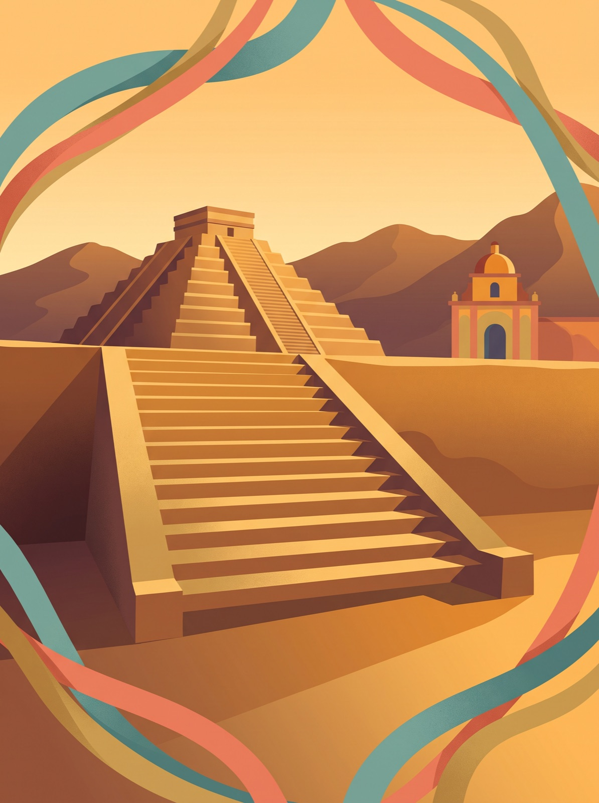
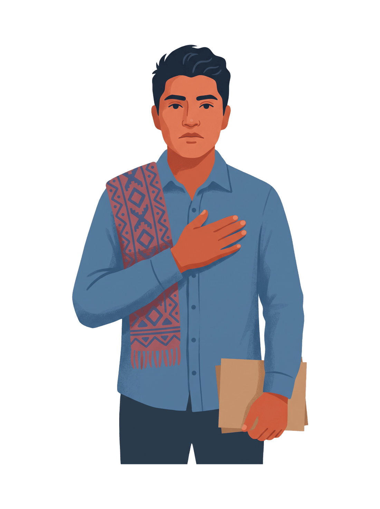
Capítulo 02 · 07Un sobreviviente
La lucha achi por verdad y justicia
En una de las tantas masacres del genocidio maquinado por el Estado, en Xococ, oriunda de Rabinal, sobrevivió un niño maya achi. Era 1982, la época más sanguinaria de la guerra civil. El ejército y las Patrullas de Autodefensa Civil (PAC) arrasaron la aldea. La quisieron dejar vacía, como las mismas almas de los soldados. Algunos de los sobrevivientes fueron niños. Les obligaron a vivir con patrulleros, que se asentaron sobre las cenizas y la sangre de la aldea devastada. Uno de esos niños se llama Jesús Tecú Osorio.
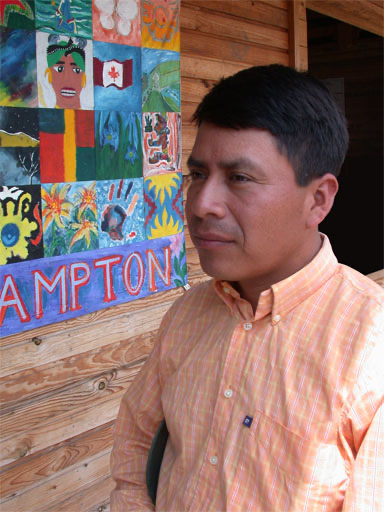
Jesús Tecú Osorio perdió a sus padres y su hermano en las masacres de Río Negro. Fue testigo, además, del exterminio de su comunidad, su pueblo. Por ello, la experiencia de la guerra no solo fue un trauma individual, sino comunitario para los pueblos indígenas.
Ciertamente Jesús Tecú Osorio fue una víctima de las miles y miles personas afectadas por la maquinaria asesina del Estado. Sin embargo, no hay pasividad en las víctimas indígenas de la guerra civil. Enmarcado en el movimiento maya, Jesús Tecú Osorio emprendió, en 1993, la búsqueda de verdad y justicia para él, su familia y su pueblo.
Sin recursos ni apoyo, amenazado por la persecución aún latente, aún viva de un Estado represor, se acercó a organizaciones de derechos humanos, que le ayudaron a exhumar los cuerpos de su familia. Más tarde, su determinación logró llevar a juicio a los patrulleros que mataron a su familia. Fueron condenados a 50 años de prisión.
En aras a su búsqueda de justicia y su lucha por los derechos humanos, el 11 de diciembre de 1996 recibe el Premio Reebok. El mismo mes en el que los altos mandos del país firmaban una paz en papel, Jesús Tecú Osorio fue premiado por la paz que él reclamó para él, su familia y su pueblo, y que el Estado guatemalteco ha pretendido asesinar.
Con un monto considerable de dinero del premio, Jesús Tecú Osorio tenía claro hacia dónde invertirlo: su comunidad, Rabinal. Su lucha no solo fue individual, sino también comunitaria. Era recobrar el tejido social, cultural arrebatado por el Estado.
Un año después, en 1997, nace la Fundación Nueva Esperanza Río Negro.
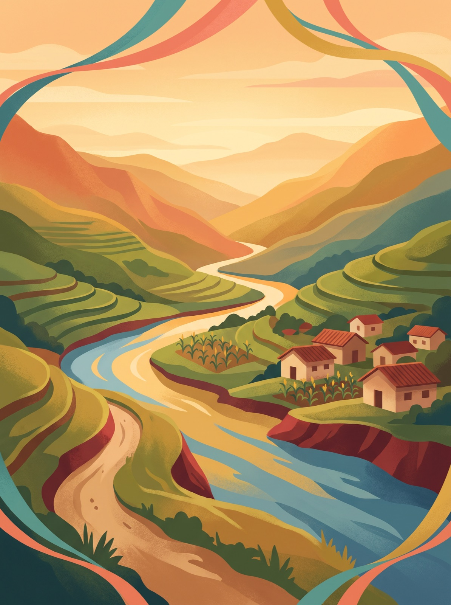
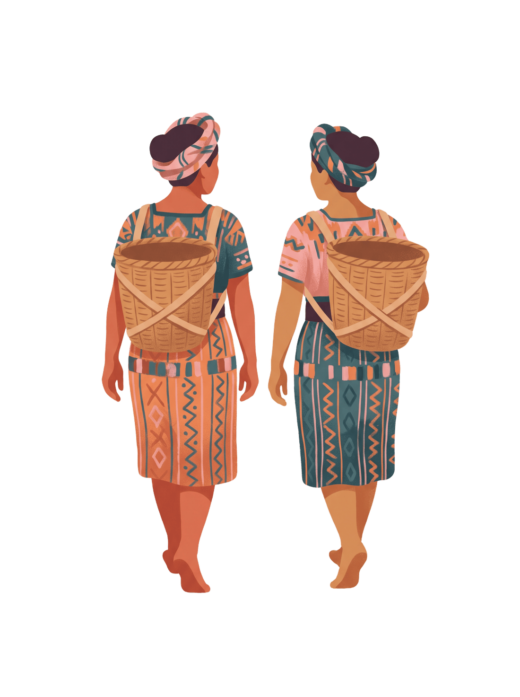
Capítulo 03 · 07Rabinal, Baja Verapaz
Un contexto histórico de Rabinal
Antes de introducirnos a la historia de la Fundación Nueva Esperanza, es necesario entender el contexto histórico del municipio de Rabinal. Un territorio con largos y tendidos años de ocupación por poblaciones prehispánicas, que permanecen aún con vida en la memoria y la cultura de los pueblos indígenas de hoy.
La Rabinal prehispánica y el pueblo achi
Rabinal3 se encuentra en la región central del departamento de Baja Verapaz. Según documentaciones etnohistóricas, la ocupación del territorio se remonta entre los años 800 y 300 a. C., cuando estuvo poblado por grupos q'eqchi'. Más tarde, grupos k'iche' y rabinaleb, o achi, llegaron a dicha región a partir de procesos migratorios.
Desde ese entonces, en Rabinal ha habitado una población maya achi. Una de las pruebas etnohistóricas de los orígenes de los achi es el Rabinal Achi4.
Durante la época colonial, a principios de la campaña de invasión española, el territorio en cuestión se conocía bajo el nombre de "Tierra de Guerra", debido a la resistencia brava de los pueblos indígenas contra la colonización. Ante esta oposición, el Fray Bartolomé de las Casas propuso llevar a cabo una "conquista pacífica". La colonización significó, en estas tierras, conquistar al evangelizar. Por lo tanto, los colonizadores confirieron al territorio el nombre de Verapaz.
Poco tiempo después de la evangelización, y como parte del proyecto colonizador, se pone en marcha la reducción de pueblos. Esta política colonial consistió en reunir, forzosamente, en asentamientos y pueblos a las poblaciones indígenas colonizadas. El propósito era mantener a los pueblos indígenas herméticos en un solo lugar, para facilitar la represión y el control coloniales. De esta manera se fundó la Rabinal colonial en 1538.
La guerra civil en Rabinal
El siglo XX es un tiempo plagado de injusticias para Rabinal. Una de ellas provino del contubernio violento entre el desarrollismo extractivista y el Estado. El caso de la comunidad Río Negro fue ejemplar de esta alianza sombría.
En la década de 1970, el Instituto Nacional de Electrificación puso su atención en la cuenca del río Chixoy, o Río Negro, para la construcción de hidroeléctricas. Este proyecto planteaba la inundación de la Cuenca Media del río Chixoy, cuestión que implicaría la desaparición de varias aldeas de población indígena, recursos naturales y áreas de cultivo, así como varios sitios arqueológicos. Entidades internacionales, como el Banco Mundial y el Banco Interamericano de Desarrollo, financiaron la construcción de la represa, que fue puesta en marcha en 1976.
Entre 1975 y 1978 inició el programa de reasentamiento. Con toda razón, las comunidades rechazaban el proyecto y se oponían al reasentamiento, ya que el Estado ofrecía tierras infértiles con viviendas inadecuadas y, sobre todo, renegaban abandonar sus tierras ancestrales. A tenor del acostumbrado trato del Estado con los pueblos indígenas, no consideró ni atendió las necesidades de las comunidades. Sin embargo, el Estado no se limitó a la desidia acostumbrada, sino puso en marcha una serie de masacres para doblegar la resistencia de Rabinal y sus comunidades.
En aquellos años Guatemala estaba sumida en la guerra civil. Bajo condiciones de dictadura y represión, en donde la disidencia era vista como rebelión y resultaba en castigo, así como un ambiente tenso dentro de las mismas comunidades producto del resquebrajamiento comunitario, el gobierno y grupos paramilitares pusieron en marcha mecanismos de terror.
En el caso de la comunidad de Río Negro, entre 1980 y 1982, fueron asesinados varios líderes comunitarios, así como cientos de pobladores, incluidos niños y recién nacidos. Arrasaron aldeas enteras. Solo en Rabinal la CEH registraría 20 masacres maquinadas por el Estado.
Rabinal en la posguerra
Parte de la antesala histórica de los Acuerdos de Paz fue el movimiento maya, cuyos inicios rondan en los años ochenta. Los traumas e injusticias sufridas por los pueblos indígenas en la guerra civil, más la enorme deuda histórica de un Estado y un país que han ignorado sus existencias, fueron el fuego de un movimiento multitudinario y cultural que buscó, a fuerza de protestas y luchas, la reivindicación étnica y las demandas de espacios civiles y de políticas en pro de sus derechos.
El movimiento maya estuvo muy presente en el proceso de la Reforma Educativa. Iniciada en 1986, durante el gobierno de Vinicio Cerezo, fue una reestructuración del sistema educativo nacional. Así, tras la presencia e influencia del movimiento maya en la Reforma Educativa y en el proceso de Paz, en 1995 se firmó el Acuerdo de Identidad y Derechos de los Pueblos Indígenas.
El Acuerdo estipulaba que el Estado se comprometería a formar políticas educativas con base en el reconocimiento étnico, la pertinencia cultural y la diversidad lingüística. De ahí nacería la idea de la educación bilingüe intercultural (EBI). El modelo EBI busca responder a las necesidades de una población y un estado multiétnico, pluricultural y multilingüístico como Guatemala. Se contradice con un sistema educativo de un país donde, históricamente, la escuela pública ha sido una institución donde se uniforma la cultura.
Sin embargo, a pesar de todas las luchas y esfuerzos del movimiento maya, hubo un revés decepcionante con los Acuerdos de Paz: no fueron constitucionales. Por tanto, los acuerdos quedaron, en el mejor de los casos, como un marco para políticas futuras, un compromiso social, pero lamentablemente no vinculable5.
Rabinal en el nuevo milenio
La trayectoria histórica de Rabinal la ha hecho un municipio predominantemente maya achi. Tienen un idioma propio y una cultura distintiva. Sin embargo, a pesar de la importancia cultural y étnica presente en el municipio, es resaltable que Baja Verapaz es uno de los departamentos más pobres de Guatemala.
En términos geográficos, Baja Verapaz se encuentra en el Corredor Seco, una franja territorial custodiada por la cadena montañosa que atraviesa el país. Su geografía está definida por la aridez, por lo que sus territorios han conllevado serios conflictos con la agricultura, las sequías y la alimentación.
Sin embargo, lo principal de la pobreza general en Baja Verapaz reside en que Rabinal y su pueblo achi no solo han sido víctimas del terrorismo histórico del Estado, sino la negación sistemática a los derechos más elementales, como educación y servicios públicos, lo que constituye un acto de violencia estructural por parte del Estado, especialmente en las comunidades rurales más alejadas y recónditas.
Por otro lado, sería lógico y pertinente que la educación en municipios como Rabinal sea bajo el modelo EBI. Sin embargo, la implementación educativa de modelos interculturales es una preocupación inexistente o mínima en un contexto donde la educación pública de secundaria y de diversificado no están garantizadas.
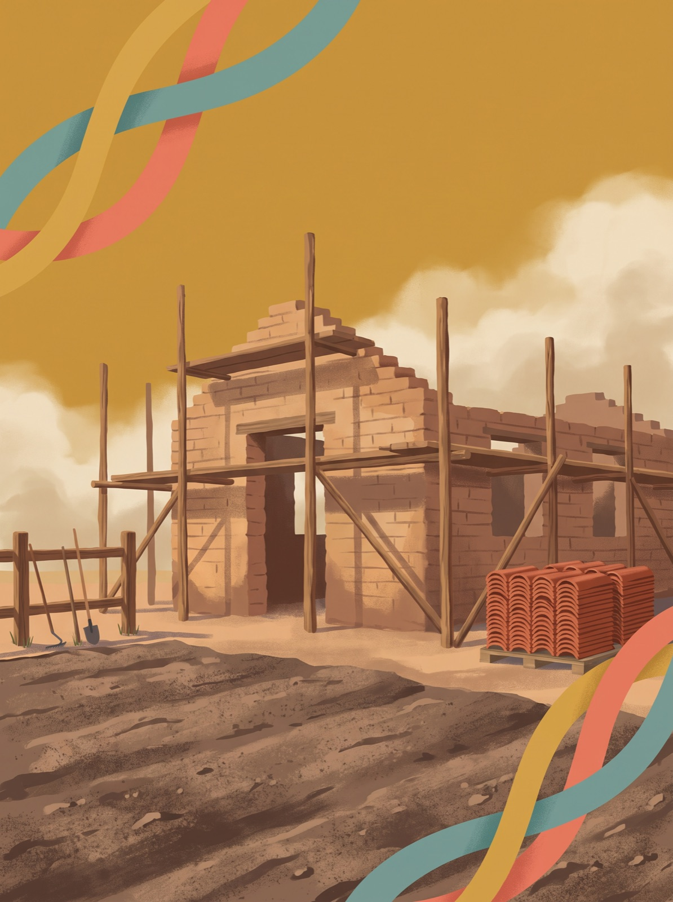
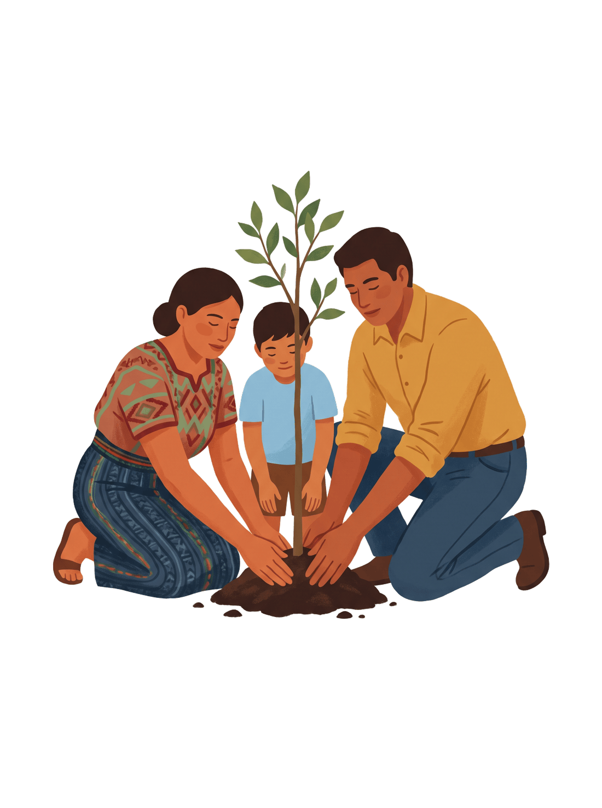
Capítulo 04 · 071997 – 2003
Una esperanza achi en una educación intercultural
La historia de Rabinal, una de resistencia sin tregua y el seguir adelante a pesar de un Estado violento e indiferente, hace eco en otra historia: la Fundación Nueva Esperanza (FNE). En ella se refleja la constante lucha de una comunidad maya, que no renuncia a la esperanza, contra un Estado que hizo todo lo posible por despojarla de un mejor futuro.
Como si Rabinal fuese un espejo en el que la FNE contempla su imagen, su historia6 es sin lugar a dudas una lucha achi.
Una nueva esperanza
En diciembre de 1996 Jesús Tecú Osorio regresó de Estados Unidos tras conseguir el premio Reebok. Asimismo, lo puso en la mira del ojo público y, por supuesto, del Estado.
De un lado recibía las amenazas y maltratos de gente cercana al Estado y el ejército. Por otro, el recelo de compañeros sobre la nueva presencia pública de Jesús Tecú Osorio, pues temían por su vida. Sin embargo, ni lo uno ni lo otro tambaleó el compromiso de crear la FNE.
Desde un comienzo la FNE tuvo por objetivos una variedad de misiones: de la capacitación laboral hasta el fortalecimiento del sistema jurídico. El propósito era comunitario y político, pues querían incidir en el desarrollo de la comunidad y la reivindicación de derechos políticos y culturales en instancias generales del gobierno y la sociedad.
Sin embargo, no estaba reconocida oficialmente, aunque ya habían puesto en marcha los trámites legales. Su institucionalización fue obstaculizada por el Estado, a través del Ministerio de Gobernación. La justificación estatal estaba en que los propósitos de la fundación eran, más bien, pertinentes a la de un "partido político". No es hasta 2003, seis años más tarde, que la FNE por fin obtiene personalidad institucional y jurídica.
A pesar del embrollo engorroso del no reconocimiento institucional, la FNE no se quedó de brazos cruzados.
En 1997 lanzaron el primer proyecto de la fundación: el centro de formación artesano. Consistió en capacitar a sobrevivientes de las masacres en cuestiones como sastrería, carpintería, herrería. La idea era dar oficio a quienes perdieron todo en la guerra civil.
Desde un principio la FNE consideraba fundamental la educación de la juventud. No podría recobrarse una comunidad, azotada por la guerra y la pobreza rural, al desamparar a sus jóvenes de su realización personal y escolar. De ahí que en 1998 extienden el apoyo con su programa de becas, que eran otorgadas a jóvenes con deseos de estudiar la secundaria.
Sin embargo, tras un trimestre del programa, las notas escolares de los becados no fueron satisfactorios. Estaban perdiendo materias y, sobre todo, quedándose rezagados en el aprendizaje. Comenzaron a preguntarse si era problema del programa o si los jóvenes no albergaban el compromiso genuino de estudiar.
Repararon que el problema verdadero residía en el sistema educativo. Los becados eran jóvenes achi y el español no era su primer idioma. Así asistían a una escuela que hablaba exclusivamente español, cuyos maestros tampoco estaban capacitados para atender la complejidad cultural ni lingüística de los becados.
Asimismo, conocieron que en las escuelas se censuraba e ignoraba la enseñanza de la guerra civil, sus causas verdaderas y su legado sombrío. El pénsum oficial de las escuelas negaba la memoria histórica del conflicto armado interno.
Al final, era una educación pública colonial en el nuevo milenio.
"De qué forma incluir dentro del pénsum de estudio lo que el Estado no toma en cuenta: el idioma, la historia de nuestro pueblo, la historia de Guatemala, principalmente del conflicto armado interno. Muchas veces en la universidad te cuentan la historia de la Segunda Guerra Mundial, mientras que el genocidio que vivió Guatemala lo dejan por un lado."
Jesús Tecú Osorio
Contra este sistema educativo castellanizado, deliberadamente amnésico de la guerra civil, rondaron en la FNE ideas de crear un centro educativo. Un centro educativo autónomo y maya. Con metodologías de educación intercultural. Un espacio donde eran bienvenido el bilingüismo. La memoria histórica como un eje pedagógico.
Con esas ideas, en 2003, dan forma al nuevo proyecto educativo de la FNE: el Centro Educativo Nueva Esperanza (CECBI).
Inicios del CECBI
Como ocurrió con la FNE, el centro educativo encontró dificultades para consolidarse como institución educativa. El Ministerio de Educación no lo reconocía oficialmente. Encontraba de menor valor y fuera de lugar la pedagogía y métodos del nuevo centro educativo, que pretendía hablar achi y reivindicar la cosmovisión maya y enseñar lo ocurrido verdaderamente en la guerra civil.
Por ello, al principio funcionó como una extensión de Talita Kumi, un centro educativo oficial. Durante tres años trabajaron básicos en sus instalaciones ubicadas en San Pedro Carchá. Mientras tanto, con vistas de asentar el centro educativo en un espacio propio, la FNE adquirió un terreno donde, con la ayuda de estudiantes y sus padres, y sin apoyo alguno del Estado, construyeron las primeras aulas y el campo de fútbol.
No fue hasta el 2006 cuando, ya tramitado por fin el proceso burocrático en el MINEDUC, se concreta oficialmente el Centro Educativo Comunitario Bilingüe Cultural Nueva Esperanza, mejor conocido como CECBI.
Más tarde, lograrían una alianza fundamental con un cooperante canadiense. La ayuda se tradujo de varias maneras. Por ejemplo, tuvo un rol importante para la autorización oficial en el MINEDUC.
Otra ayuda, aún más significativa, fue que, gracias al cooperante, el equipo del CECBI conoció, como si el destino predispusiera el encuentro, una pedagogía que encajaría con la filosofía del centro educativo y la FNE.
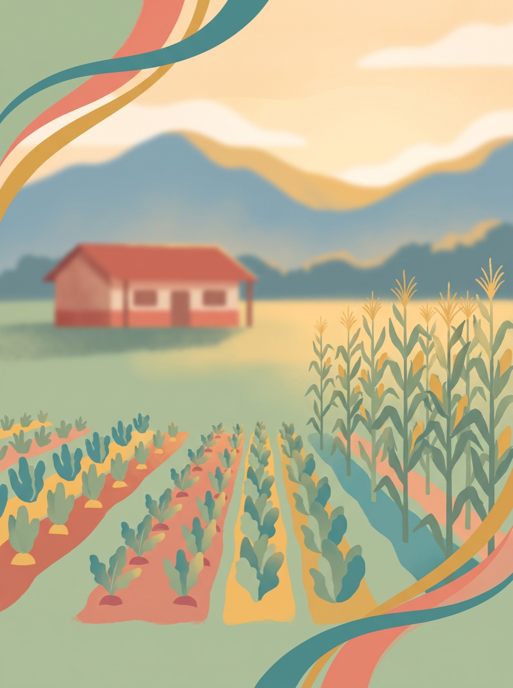
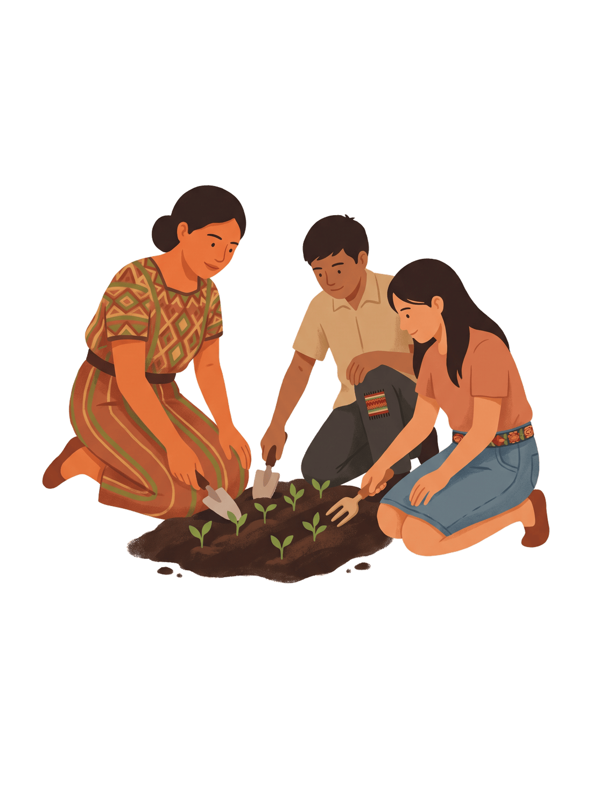
Capítulo 05 · 07La pedagogía del CECBI
Práctica, identidad y memoria
El hospedaje físico que ofreció Talita Kumi por tres años al CECBI, les hizo ver de cerca la metodología distinta con la que educaban.
Era una pedagogía, influenciada por la educación popular, orientada a la horizontalidad y participación activa. Resaltaba por su fuerte enfoque en la práctica agrícola. Era razonable, pues fue pensada para contextos rurales. La metodología se nombra Sistema de Aprendizaje Tutorial (SAT), originada por la FUNDAEC en Colombia.
Atraídos por el potencial educativo del SAT, el entonces equipo del CECBI decidió postularse a las capacitaciones de la FUNDAEC. La idea no solo era aprender la nueva metodología. Estaban conscientes que todo contexto cultural es distinto. Por tanto, querían redefinir y adaptar el SAT a una pedagogía propia: una intercultural propicia para el contexto rabinalense y el pueblo achi.
Educar es practicar
Uno de los ejes pedagógicos del CECBI es hermanar la teoría con la práctica, que es la base del SAT. El ejemplo representativo de este principio se ve reflejado en su carrera de perito en desarrollo comunitario7. La carrera empezó a mediados de 2012, como una opción para quienes deseaban continuar estudiando tras finalizar los básicos. La carrera, además, les permite a los estudiantes optar por continuar en las universidades del país.
En la carrera los estudiantes aprenden, en el transcurso de tres años, contenidos y materias sobre el cultivo de la tierra, la experimentación agrícola, la crianza de animales, entre otros. Paralelo al aprendizaje teórico, en los huertos y cultivos del CECBI los estudiantes ponen en práctica lo aprendido en clase. Aunque los estudiantes de básicos también reciben el aprendizaje práctico, en la carrera entran de lleno a contenidos especializados y un ejercicio tecnificado.
"Como una piedra en el camino del quehacer educativo, tenemos que responder, obligarnos a la política educativa y al plan de educación nacional. Aunque seamos privados, no podemos desligarnos. Entonces lo que nos hace únicos es proyectar una metodología activa, participativa, en donde hay área práctica. Esa práctica vista en dos momentos: 1) desde que llega el estudiante o la estudiante y 2) su práctica mejorada, ya en la realización de su quehacer, por ejemplo si se tratara de una parcela. Eso nos hace diferentes."
Directora de CECBI
De manera que es un aprendizaje pendular: de la teoría a la práctica y viceversa. Además, en el centro del aprendizaje está el cultivo y conocimiento de la tierra. En la cosmovisión maya es una cuestión fundamental, pero poco comprendida, o despojada deliberadamente, por el Estado afín a políticas desarrollistas y extractivistas. Asimismo, hay otra desventaja: la educación de la tierra y lo agrícola es ninguneada en comparación a otras profesiones y conocimientos liberales, occidentales y urbanos.
Educar es ser
La adopción del SAT ha sido fundamental para el CECBI. Sin embargo, no ha sido una integración inadaptada de la cultura maya achi. Están conscientes que no puede haber una educación integral sin reconocer la identidad: es decir, lo que implica y representa el ser achi. Es esta particularidad del CECBI que hace de su pedagogía, necesaria y comprometidamente, una intercultural.
Cabe recordar que la FNE nació en el contexto de los Acuerdos de Paz. En esta época, la presencia y los esfuerzos políticos del movimiento maya tuvieron aportes que influyeron las negociaciones y planificaciones de la educación posguerra. Uno de esos aportes, acaso el más importante, fue el modelo de educación bilingüe intercultural (EBI).
El CECBI, desde un principio, trabajó bajo la EBI. En un país donde la educación nacional comúnmente borra o no tiene capacidad para atender diferencias culturales, era innegociable e inevitable para el CECBI dar una educación arraigada en la cultura maya achi. No sobra destacar que es, asimismo, un posicionamiento político, en tanto es una respuesta decolonial a una educación homogénea y castellanizada.
Aunque predomina el achi en Rabinal, también hay jóvenes ladinos. El CECBI tiene estudiantes de Rabinal y, conforme ha crecido, de municipios aledaños. Por tanto, en el CECBI el idioma es esencial. Hablar achi y español responde a la diversidad lingüística de Rabinal. En un día cualquiera, una clase transcurre con tutores y estudiantes hablándose en achi y español.
Sin embargo, el EBI abarca entera la cultura, por lo que no se reduce a lo lingüístico. Así, a lo largo de los años, en aprendizaje y celebración de la cultura maya achi y rabinalense, en el CECBI han incorporado a su currículo danzas tradicionales, producción de artesanías, elaboración de tejidos para indumentarias mayas, entre otros. Esta inclusión cultural tiene estrecha relación con la SAT, cuya práctica pedagógica se desarrolla con la tierra.
"La cultura está relacionada a las actividades que realizamos cada día. Por ejemplo, las actividades que realizan los estudiantes en el área de procesos productivos, hay que aprender conforme a las prácticas culturales de nuestros abuelos. Cuando es tiempo de invierno, o cuando se cultiva la tierra, hay que pedir permiso ante el Ajaw. En este caso, también tienen que conocer, aprender sobre los nahuales de cada día."
Jesús Tecú Osorio
Si el aprendizaje práctico son las manos de la pedagogía del CECBI, el modelo de educación bilingüe cultural es el corazón.
Educar es recordar
El CECBI tiene su historia arraigada en la experiencia maya del conflicto armado interno. De una búsqueda de justicia por las masacres cometidas brotó la FNE y el centro educativo. Aunque pareciera lejos aquella época sombría, en el CECBI es indispensable la educación de la memoria histórica de un periodo que aún hoy sigue vigente su legado trágico.
Sobre todo en un país que hace todo lo posible por censurar e ignorar el genocidio maya, la memoria histórica tiene un sitio especial para el CECBI. La memoria es, entonces, la resistencia maya de la verdad histórica contra la política estatal del olvido.
Dentro del currículo de memoria histórica entran todos los recorridos de comunidades masacradas, los testimonios de sobrevivientes y la conmemoración de fechas luctuosas. Está enmarcada en el modelo de la EBI, pues la memoria también forma parte de la identidad cultural; en este caso, maya achi.
"En el aula hay participación para conmemoraciones. También ellos tienen que viajar al lugar; conocer, contar, y que ellos vayan a ver. Por ejemplo, si hablamos de la conmemoración de Xococ, el 13 de febrero, los estudiantes tienen que viajar al lugar. Dentro del mismo respetamos la religión de cada estudiante porque tenemos estudiantes que no desean participar, pero es sensibilizar a los estudiantes. Tampoco podemos desligarlos de las actividades, también tienen que participar en las actividades."
Directora de CECBI
Un punto resaltable de la memoria histórica es su tipo de transmisión intergeneracional. En primer lugar, los recorridos y testimonios son huellas, físicas y orales, de la historia de Rabinal y del pueblo achi que los estudiantes aprenden. Es una transmisión para conservar la memoria comunitaria de generación en generación.
Una segunda forma es la secuencia intergeneracional entre estudiantes. En los recorridos y testimonios, por ejemplo, estudiantes de grados avanzados participan en la enseñanza de los más jóvenes. Así, es una enseñanza secuencial: de tutor a estudiante, de estudiante a estudiante. Por ello, los tutores no son los únicos con la potestad ni autoridad para mantener viva una memoria que es, en efecto, comunitaria.
En el CECBI esta secuencia tiene la particularidad de ser horizontal e intercultural. No se limita al currículo de la memoria histórica. Es una constante pedagógica en toda la educación del CECBI: desde el trabajo de campo de la SAT hasta la enseñanza de danzas tradicionales o materias del pénsum oficial.
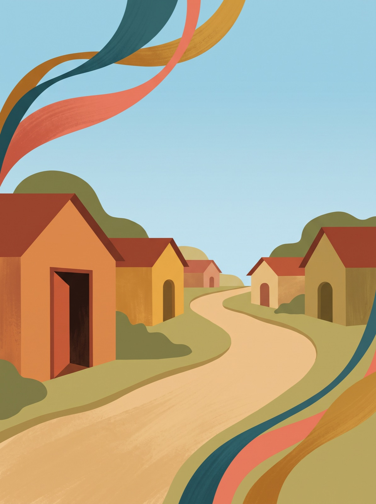
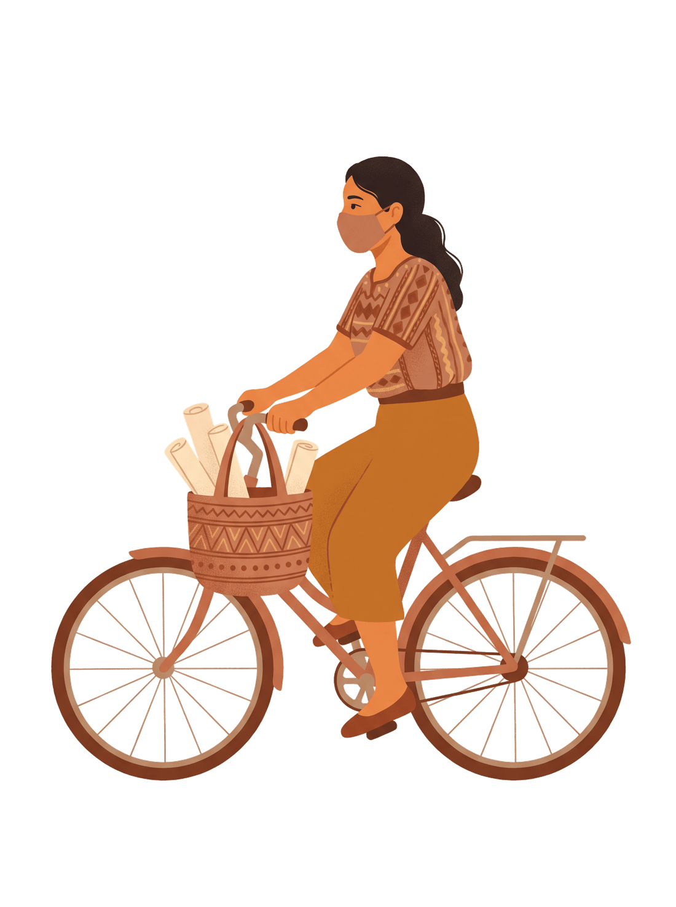
Capítulo 06 · 072020 – 2023
CECBI en tiempos pandémicos
Tras una larga trayectoria de proyectos innovadores, metodologías distintas y resistencia inquebrantable contra la falta de acción y atención estatal, para 2020 el CECBI ya era una organización reputada en Rabinal. El crecimiento institucional y pedagógico no se detuvo en ningún momento.
Sin embargo, en ese mismo año irrumpió la pandemia COVID-19, encerrando al mundo entero. Trabajos a distancia, hogares enclaustrados y escuelas vacías fueron parte del panorama pandémico. En países como Guatemala, la educación sufrió irremediablemente un revés histórico, cuyos efectos empiezan a dilucidarse a pesar de no tener idea exacta del alcance económico, cultural y social.
Como muchas otras escuelas y centros educativos, la pandemia COVID-19 interrumpió la trayectoria educativa del CECBI. Sin embargo, con el compromiso por la juventud y la educación que los ha caracterizado, se adaptaron a la atípica realidad pandémica.
Educar en medio de la pandemia
La semana que el gobierno guatemalteco decretó las medidas sanitarias y la cuarentena nacional, el equipo del CECBI había ido a una excursión educativa. En su regreso, confusos y sorprendidos, encontraron calles vacías y un silencio plomizo que envolvía todo Rabinal. De igual manera, la pandemia COVID-19 atenazó con repentina contundencia el trabajo del CECBI.
El equipo no tardó en implementar metodologías improvisadas para resolver la educación de sus estudiantes en medio de un contexto de aislamiento. Así, se adoptó una modalidad virtual. Dependieron del internet para compartir ejercicios y contenidos, transmitir clases y abrir espacios para reforzamiento y resolución de dudas.
Sin embargo, en un país con poca infraestructura y acceso tecnológicos, no todos contaban con servicios de internet ni dispositivos, especialmente quienes vivían en áreas rurales. Por lo tanto, el equipo decidió realizar rondas de visitas semanales, o monitoreos, a propósito de entregar guías y hojas de trabajo. A estas alturas, por cierto, el CECBI tenía una nómina de estudiantes de municipios y comunidades fuera de Rabinal. El equipo se organizó como pudo para atender a los estudiantes de lugares lejanos.
"Retomando la modalidad virtual, se trabajó mayormente con los jóvenes pero no todos contaban con internet para recibir las clases. Se tomaban en cuenta las áreas fundamentales. Se priorizó contenido. Cuando los compañeros no salían a monitorear, se trabajaban las guías para mandar a los estudiantes. Cada docente vio cómo trasladar el contenido, más el de matemáticas, hacer tutoriales, hacer las hojas. Por ejemplo, con los que no cuentan un dispositivo, tomarse el tiempo y explicar cómo resolver."
Tutora de CECBI
Otra adaptación apremiante fue con respecto al aprendizaje práctico; es decir, los procesos de práctica mejorada con los cultivos, huertos, crianza de animales. Con las precauciones necesarias, convocaban a pequeños grupos de estudiantes al centro educativo, con quienes trabajaban las prácticas.
Con todo, a pesar de los esfuerzos considerables por no dejar a nadie atrás ni detener el proceso educativo del CECBI, se enfrentaron a inevitables consecuencias de la pandemia, fuera del control y voluntad del equipo.
Contra el legado pandémico
Una de las consecuencias negativas más notorias fue la deserción de estudiantes por necesidad económica, muchas veces con el beneplácito de los padres. Si bien desde 2015 habían bastantes casos de deserción, por temas de migración o labor, la pandemia agravó las causas. El equipo del CECBI lamentó esta situación, pues poco podían hacer para impedirla.
En el regreso a clases pospandemia se encontraron con dificultades de atención y aprendizaje en los estudiantes. En primer lugar, fue evidente la transición inefectiva entre el modelo virtual y el presencial. Al acoplarse y acomodarse a la dinámica virtual, los estudiantes esperaban que la enseñanza se diera por internet o ponían poca importancia al aprendizaje presencial. En el CECBI, entonces, fue necesario, como dijo una tutora, "enseñar a estar en la escuela para luego enseñar los contenidos".
Segundo, el sobreuso del celular contagió de distracción y desatención a los estudiantes. La virtualidad forzó la dependencia al internet, al celular. Dada la poca supervisión que propiciaba educar frente a pantallas y a distancia, y la indisponibilidad de los padres por diversos motivos, los estudiantes usaban el celular y el internet para jugar en vez de aprender o hacer tareas. Por estas dificultades, el equipo del CECBI identificó una reducción en el aprendizaje de los estudiantes.
"El año pasado tuve el grado de primero básico. Fue un reto porque los estudiantes se adaptaron a las guías. Venían de sexto primaria, pero venían con mentalidad de quinto primaria. No traían los niveles básicos de comprensión lectora, ortografía, caligrafía. Pasábamos hasta media mañana leyendo y haciendo los ejercicios para que se sumergieran a lo presencial. Estaban acostumbrados a hacer un par de tareas. Tenemos juegos de lógica y se han tratado de implementar, porque cuesta traerlos otra vez."
Tutora de CECBI
Otro problema de la pandemia fueron los estragos emocionales que sufrían los estudiantes. El equipo del CECBI han observado mucha dificultad de socialización en los estudiantes. Se sentían aislados, con poca confianza y autoestima, callados; como si en los estudiantes la cuarentena aún no había sido levantada. Para ello, en el CECBI iniciaron con ejercicios de vocalización y actividades lúdicas y artísticas para romper el silencio y el hielo de los estudiantes.
Por último, con respecto al aprendizaje de memoria histórica, el distanciamiento social y las medidas sanitarias cortaron de tajo las actividades conmemorativas, las excursiones de campo y las prácticas de la cultura achi. Esto interrumpió la secuencia intergeneracional. No solo por el hecho de no llevar a cabo los contenidos y ejercicios, sino rompió el ciclo de enseñanza de tutor-estudiante, estudiante-estudiante, desarticuló los roles que normalmente aprenden y enseñan desde la pedagogía intercultural del CECBI.
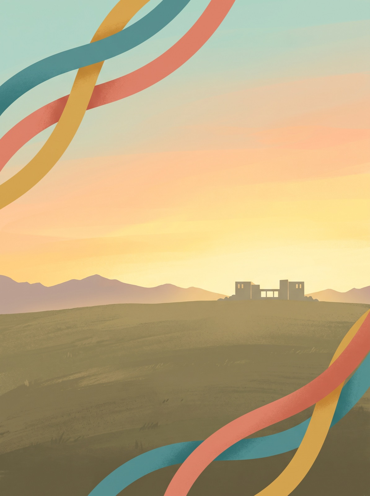
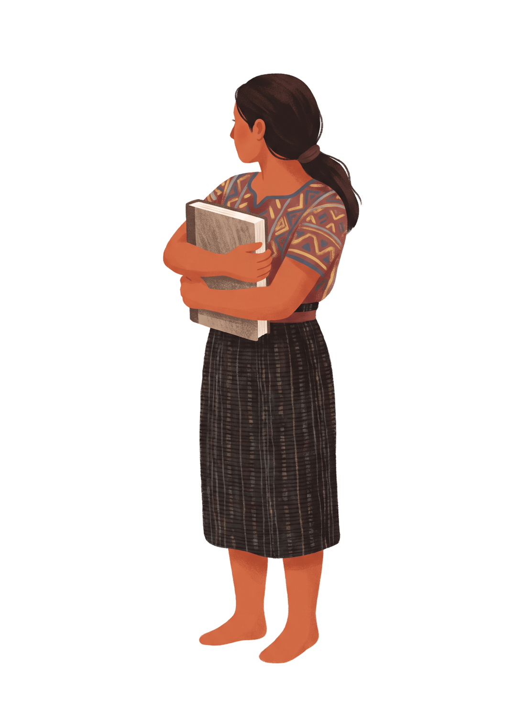
Capítulo 07 · 07El futuro
Más allá de la pandemia
En el 2023 se retomó por completo el regreso a clases. Lo que depara el futuro es incierto en términos de los efectos pandémicos. Aún estamos a oscuras del alcance a largo plazo. No obstante, en el CECBI hay futuro más allá de la pandemia.
No ha sido fácil para el CECBI atravesar la pandemia en un estado de emergencia educativa. Sin embargo, paso a paso han ido recobrando la educación que desde hace dos décadas atrás empezaron. Es de especial importancia la presencia y trabajo de organizaciones como el CECBI por su particularidad intercultural, identitaria y política en un país que, históricamente, la ha negado de forma sistemática, al punto de incluso aniquilarla.
En el CECBI, con la creencia firme en la educación intercultural, tienen la esperanza de fundar, a través de la FNE, una universidad maya achi. El sistema universitario, donde inscribirse es sinónimo de privilegio por los pocos que logran llegar, ha compartido la historia de la educación nacional, de racismo y exclusión para los pueblos indígenas. El sueño de la FNE está en replicar el trabajo consolidado del CECBI a instancias universitarias.
Con todo, no olvidemos que la historia del CECBI es la de un pueblo que se ha resistido y sobrepuesto a la injusticia social, la política de ignorancia educativa, al genocidio del Estado guatemalteco. Una historia asentada en la práctica, cultura y memoria del pueblo maya achi.
Para el CECBI, sin interculturalidad no hay país justo ni futuro verdadero.
Más estudios e investigación
Evidencia de otras organizaciones aliadas
CECBI es uno de los siete estudios de caso de la iniciativa RECARGA de Population Council Guatemala. Explora el resto de nuestra biblioteca de investigación sobre educación e infancia indígena en Guatemala.
Fuente: estudio de caso "CECBI" de la iniciativa RECARGA, Population Council Guatemala, con Fundación Summit, Fundación Tinker y el Fondo Global para la Niñez, en colaboración con la Fundación Nueva Esperanza Río Negro (Rabinal, Baja Verapaz). Texto adaptado para este sitio; ilustraciones generadas con inteligencia artificial (Artlist), inspiradas en el trabajo visual original de RECARGA.
Notas
Este estudio de caso fue diseñado, visualizado y escrito por el equipo de Population Council Guatemala, con colaboración y retroalimentación del equipo de CECBI, para el proyecto Recuperando la Educación en Centroamérica: Activando Redes y Grupos Asociados (RECARGA). Texto adaptado para este sitio; las imágenes originales fueron tomadas de las redes sociales de CECBI o fotografiadas por el equipo de Population Council Guatemala, y aquí se reemplazaron por ilustraciones generadas con inteligencia artificial inspiradas en ese material visual.
- El conflicto armado interno o guerra civil de Guatemala comienza, según el consenso historiográfico, en 1960. En 1954 las fuerzas militares, auspiciada por la CIA de Estados Unidos y aliada de las élites sociales de la época, derrocan al gobierno de Jacobo Árbenz Guzmán, lo que dio fin a la llamada Primavera Democrática (1944-1954). ↩
- La Comisión para el Esclarecimiento Histórico (CEH) fue establecida el 23 de junio de 1994 para "esclarecer con toda objetividad, equidad e imparcialidad las violaciones a los derechos humanos y los hechos de violencia que causaron sufrimientos a la población guatemalteca, vinculados con el enfrentamiento armado". ↩
- Según describe la Academia de Lenguas Mayas de Guatemala (2012), el nombre de Rabinal y su significado muestran vestigios de estos primeros habitantes. Rabinal significa «lugar de la hija del señor», derivado del idioma q'eqchi' con los componentes: rab'in (hija del señor) y el locativo al. El significado del nombre alude a un mito antiguo sobre el Viejo Dios de la Tierra que, como dueño del cerro, vivía en una cueva. En ese palacio, a la par de todos los animales, guardaba a su tesoro más precioso: su hija, que se llamaba Po (que en idioma q'eqchi' significa «luna»). El mito relata cómo un joven cazador, llamado B'alan Q'e (que también es una palabra q'eqchi', que significa «sol escondido»), pasaba a la cueva diariamente y observaba a Po tejiendo. Disfrazado como un gorrión, B'alan Q'e logra entrar a la cueva y, después de haber pasado la noche juntos, escapa con Po. Cuando el Viejo Dios de la Tierra descubrió que habían huido, su enojo no tuvo límites y llamó a su hermano, el Dios de la Lluvia, para perseguirlos. Después de varias aventuras, la pareja finalmente obtuvo el consentimiento del Viejo Dios de la Tierra para casarse, y luego B'alan Q'e se convirtió en sol, mientras que Po se levantó como luna. En ese momento la presente época es creada. ↩
- Una danza dramática, catalogada en 2008 como Patrimonio Inmaterial de la Humanidad, que escenifica, con teatro y música, los conflictos de poder entre la confederación k'iche', del que se liberan los rabinaleb para formar su propio pueblo. ↩
- En 1999, la población votó por el "No" en la consulta popular que daría paso a que los Acuerdos adquirieran un rango constitucional y que permitirían cumplir con el contenido de estos. Grupos conservadores se inclinaban por este resultado, argumentando que la aprobación de las reformas favorecería la polarización del país y privilegiaría a los pueblos indígenas, un sector que históricamente ha sido marginado y excluido, y cuyas condiciones de vida tienden a ser precarias. El resultado de la consulta impidió que se pusieran en marcha mecanismos contundentes para el cumplimiento de los Acuerdos. ↩
- El 26 de octubre de 2023 el equipo de Population Council llegó a realizar un taller participativo, con una duración de seis horas, en CECBI. Participaron 8 personas del equipo CECBI. Los objetivos del taller fueron, a través de una discusión grupal guiada y una línea de tiempo: a) recolectar la historia local de Rabinal, b) documentar el desarrollo organizacional y educativo de CECBI, especialmente durante y tras la pandemia, y c) entender el ecosistema educativo en el que se encuentra el socio. Uno de los productos fue este estudio de caso en forma de historia narrativa, elaborada luego de un proceso de sistematización del taller, revisión bibliográfica, estadísticas, archivo audiovisual y entrevista. ↩
- En un principio la nombraron perito en bienestar rural. Sin embargo, el MINEDUC se opuso al título. Por lo tanto, tuvieron que rebautizarla como perito en desarrollo comunitario para que se acoplara a las carreras de la carpeta oficial del MINEDUC. En el CECBI, no obstante, la siguen llamando bienestar rural, pues es un nombre más justo con relación a su cosmovisión de la tierra y la educación. ↩
Bibliografía
- Academia de Lenguas Mayas de Guatemala. (2012). Retaliil ano'nib'al mayab' achi. Monografía Maya Achi. almg.org.gt
- Ajcalón Choy, R. (2017). Luchas indígenas en Cubulco y Rabinal, Baja Verapaz, Guatemala, en el contexto del multiculturalismo neoliberal. LasaForum, 48(2), 28.
- Arnauld, M.-C. (1993). Los territorios políticos de las cuencas de Salamá, Rabinal y Cubulco en el Postclásico (Baja Verapaz, Guatemala). En Representaciones del espacio político en las tierras altas de Guatemala: Estudio pluridisciplinario en las cuencas des Quiché oriental y de Baja Verapaz (pp. 43–109). Centro de Estudios Mexicanos y Centroamericanos. books.openedition.org
- Calveiro, P. (2006). Los usos políticos de la memoria. En Sujetos sociales y nuevas formas de protesta en la historia reciente de América Latina. Consejo Latinoamericano de Ciencias Sociales [CLACSO].
- Concejo Municipal de Rabinal, Baja Verapaz. (2019). Plan de Desarrollo Municipal y Ordenamiento Territorial, municipio de Rabinal, Baja Verapaz 2019–2032.
- Corte Interamericana de Derechos Humanos. (2012). Ficha técnica: Masacres de Río Negro Vs. Guatemala. corteidh.or.cr
- Cujá Jerónimo, M. A. (2008). Actitud de los docentes bilingües (achí-castellano) hacia el sistema de la educación bilingüe intercultural de Rabinal, Baja Verapaz [Tesis de licenciatura]. Universidad Rafael Landívar.
- Cumes Simón, A. E. (2004). Interculturalidad y racismo: El caso de la Escuela Pedro Molina, en Chimaltenango, Guatemala [Tesis de maestría, FLACSO, Sede Guatemala]. repositorio.flacsoandes.edu.ec
- Dávila Díaz, S. G. (2019). Proceso danzario en Rabinal: Cambio y continuidad en un municipio maya achi [Tesis de licenciatura]. Universidad del Valle de Guatemala.
- De Gamboa Tapias, C. (2019). La memoria como política y las responsabilidades derivadas del pasado. Ideas y Valores, LXVIII(5), 81–104.
- DIGEBI. (s. f.). Dirección General de Educación Bilingüe Intercultural. digebi.mineduc.gob.gt
- Environmental Defender Law Center. (s. f.). La represa Chixoy y las masacres de Río Negro. edlc.org
- Escalón, S. (2019). Guatemala: de cómo unos campesinos de Rabinal vencieron la sequía. nomada.gt
- Gordillo, P. (2013). Comprendiendo la violencia estructural en Guatemala. Brújula. brujula.com.gt
- Guerrero Garnica, J. M. (2013). Violencia estructural en Guatemala o la institucionalización de la violencia. Analistas Independientes de Guatemala. analistasindependientes.org
- Hemeroteca PL. (2016, 12 de mayo). Triunfa el "No" en consulta popular de 1999. prensalibre.com
- Henríquez Puentes, P. (2007). Teatro maya: Rabinal Achí o danza del Tun. Revista Chilena de Literatura, 70, 79–108. doi.org/10.4067/S0718-22952007000100004
- Instituto Nacional de Estadística Guatemala. (2018). XII Censo Nacional de Población y VII de Vivienda.
- Kupprat, F. A. (2011). Memorar la cultura: modos de mantener y formar las identidades mayas modernas. Estudios de Cultura Maya, 38, 145–166. doi.org/10.19130/iifl.ecm.2011.38.53
- La Parra, D., & Tortosa, J. M. (2003). Violencia estructural: una ilustración del concepto. Documentación Social, 131, 57–72.
- Martínez Paiz, H. (2009). La metamorfosis de una comunidad achi: el caso de Río Negro-Pacux. XXII Simposio de Investigaciones Arqueológicas en Guatemala, 2008, 285–295.
- Méndez Reyes, J. (2012). Descolonización del saber. Una mirada desde las epistemologías del sur.
- Mosquera Saravia, M. T. (2018). Informe final sobre la posesión ancestral de las comunidades Chitucán, Canchún, Mangales y Río Negro de Rabinal, Baja Verapaz. Secretaría de Asuntos Agrarios de la Presidencia, Gobierno de la República de Guatemala. ceur.usac.edu.gt
- Prensa Comunitaria. (2020). Las masacres del Río Negro. prensacomunitaria.org
- Programa de las Naciones Unidas para el Desarrollo (PNUD). (2022). Desafíos y oportunidades para Guatemala: hacia una agenda de futuro. La celeridad del cambio, una mirada territorial del desarrollo humano 2002–2019 (p. 424).
- Sáenz de Tejada, R. (2022, 17 de enero). Guatemala: ¿25 años de paz? Nueva Sociedad. nuso.org
- Sam Colop, L., & Sandoval, M. C. (2012). La educación bilingüe intercultural en Guatemala: análisis de las propuestas curriculares y las prácticas en escuelas públicas [Tesis de maestría, Universidad de Antioquia]. bibliotecadigital.udea.edu.co
- Sieder, R. (2008). Entre la multiculturalización y las reivindicaciones identitarias: construyendo ciudadanía étnica y autoridad indígena en Guatemala. En Multiculturalismo y futuro en Guatemala (pp. 69–96). FLACSO/OXFAM.
- Torres Ávila, J. (2013). La memoria histórica y las víctimas. Jurídicas, 10(2), 144–166.
- Viceministerio de Educación Bilingüe Intercultural. (2009). Modelo Educativo Bilingüe e Intercultural. Ministerio de Educación.
- Wikipedia. (2023, 27 de diciembre). Jesús Tecú Osorio. En Wikipedia. es.wikipedia.org